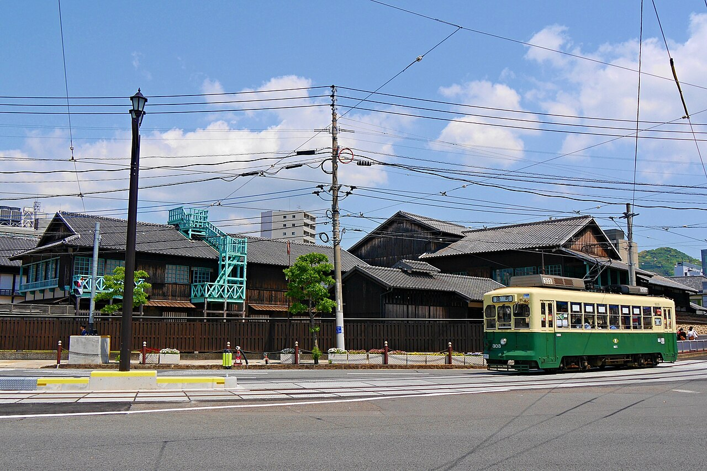
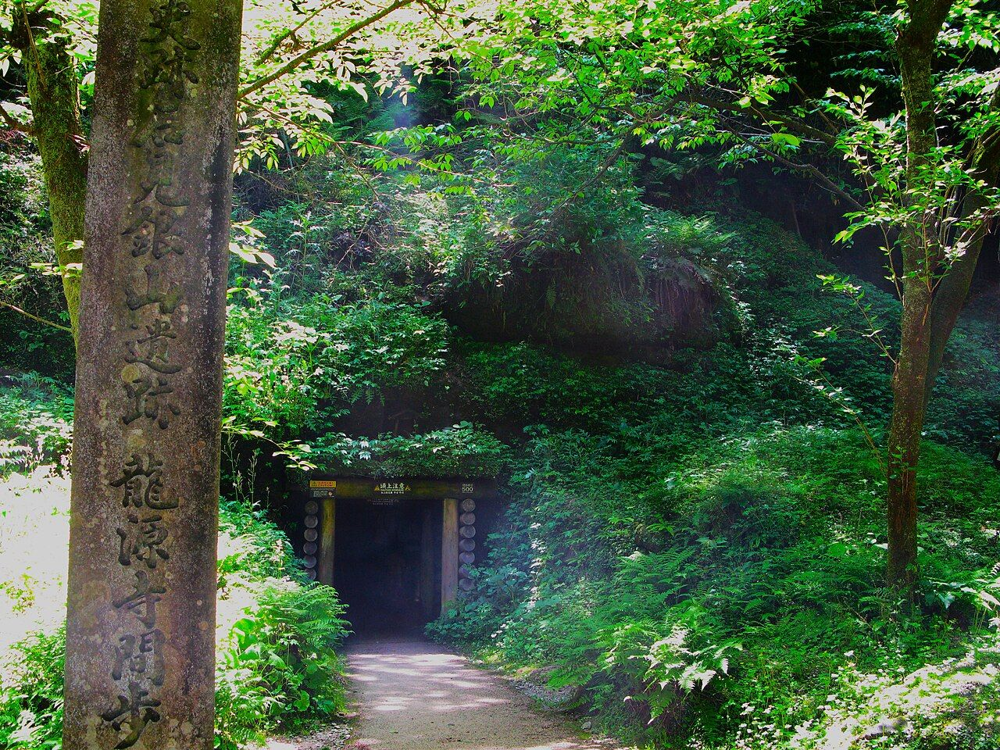
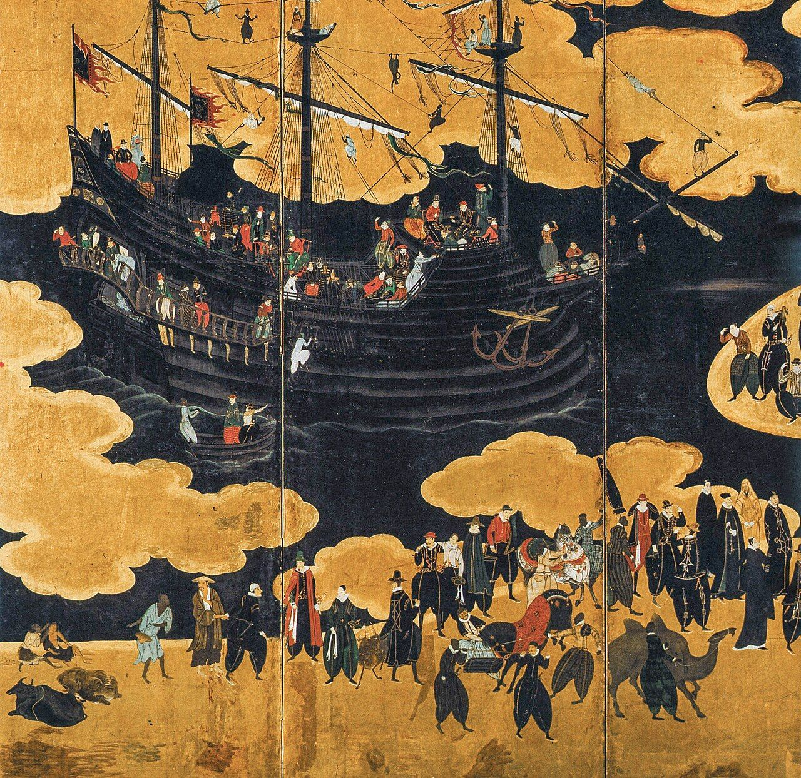
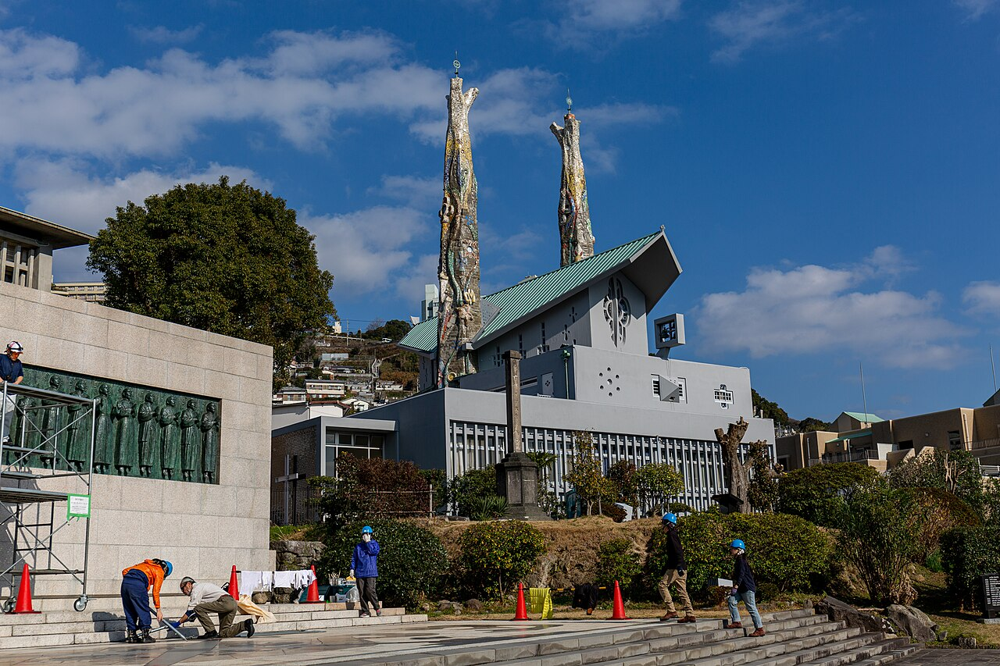
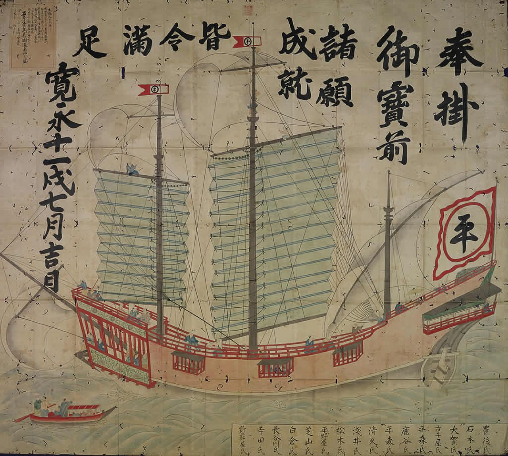
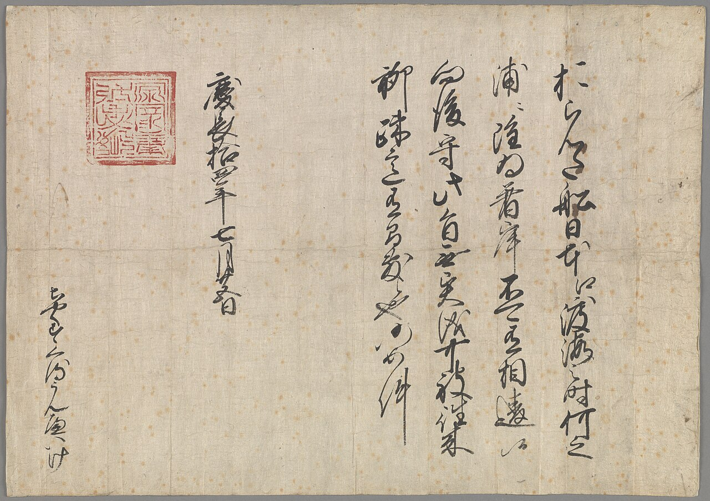
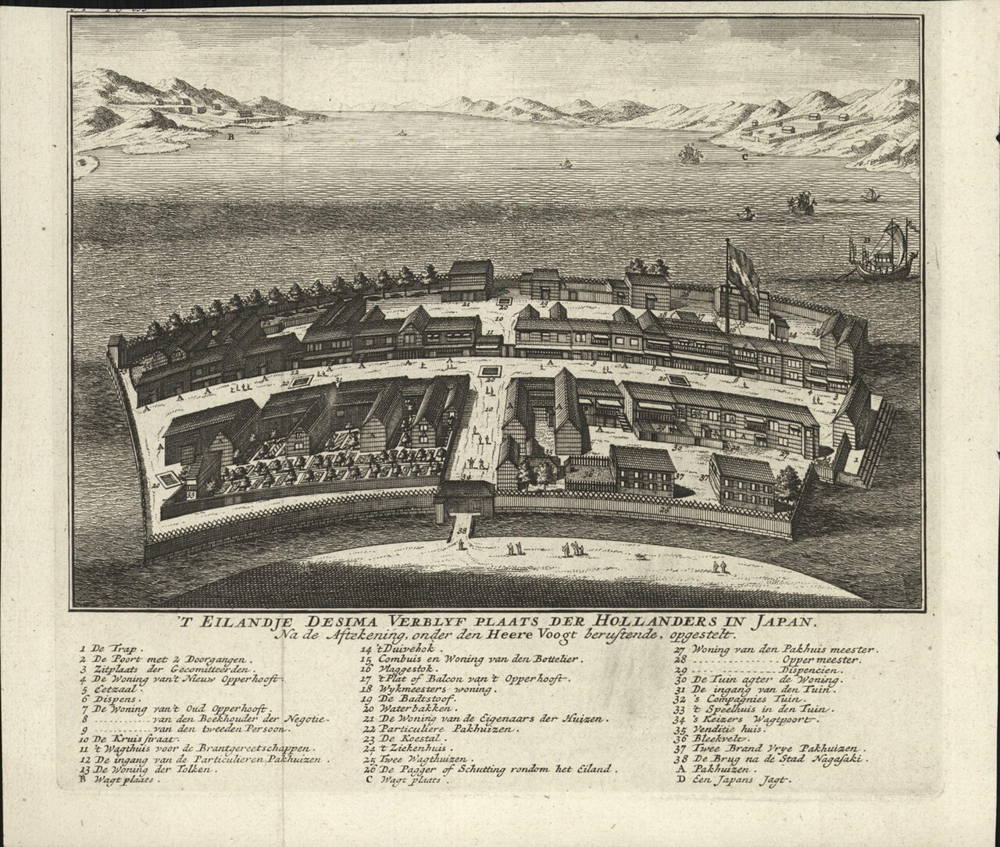
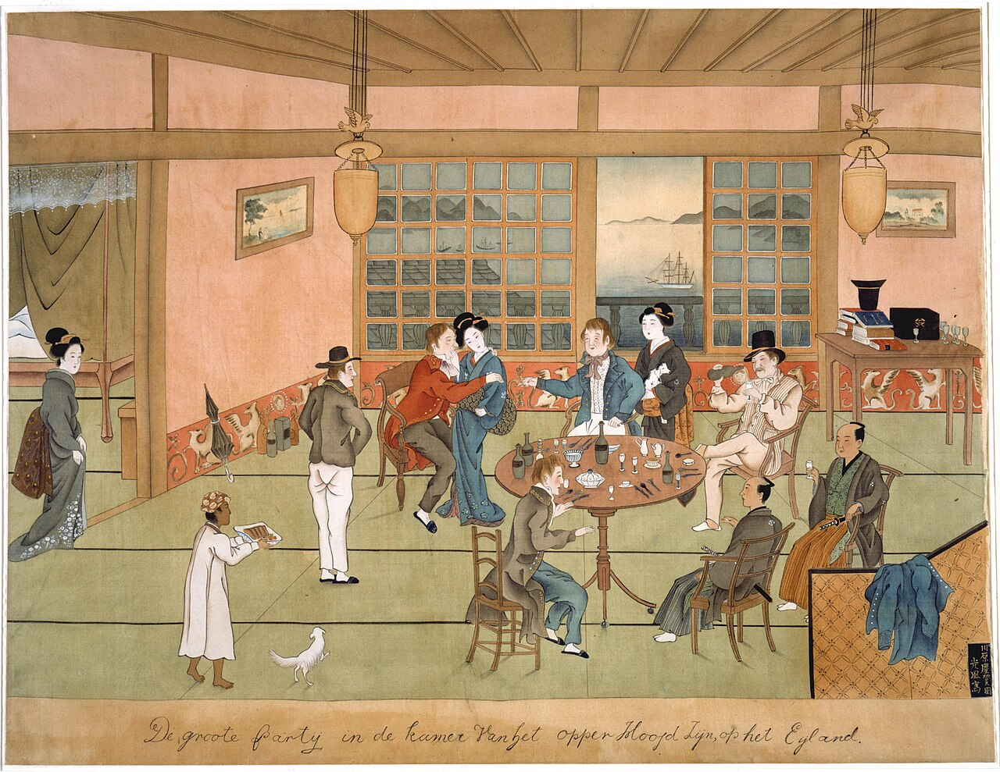

長崎の港、1641年の初夏。平戸（いまの長崎県平戸市）にあったオランダ東インド会社の商館が、港に浮かぶ小さな人工の島へ移されました。出島です。オランダ東インド会社は、アジアとの貿易のためにつくられたオランダの会社でした。
扇の形をした島は、長さ約120m、幅約75m。もとはポルトガルの商人のために、幕府が1634年から築いた島で、そのポルトガル人は2年前に締め出されていました。銀で世界とつながっていた日本は、なぜ国を閉じたのでしょうか。そして、本当に閉じきったのでしょうか。

17世紀のはじめ、世界の銀の約3分の1を生んでいた日本は、やがてポルトガルやスペインの船を締め出します。けれども、国を閉じたはずの日本には、外へ開いた口が4つ残っていました。流れ図と地図で、幕府が何を閉じ、何を残したのかを確かめてみませんか。
前回は、16〜17世紀の世界で、国全体の生産がとくに大きかったのは明の中国とインドだった、という話でした。ヨーロッパの人々はその品を買うために、アメリカ大陸の銀を東へ送り続けました。明へ流れこんだ銀には、日本の石見銀山などの銀もありました。銀で世界とつながった日本は、そのあとどうなったのでしょう。
長崎の港、1641年の初夏。平戸（いまの長崎県平戸市）にあったオランダ東インド会社の商館が、港に浮かぶ小さな人工の島へ移されました。出島です。オランダ東インド会社は、アジアとの貿易のためにつくられたオランダの会社でした。
扇の形をした島は、長さ約120m、幅約75m。もとはポルトガルの商人のために、幕府が1634年から築いた島で、そのポルトガル人は2年前に締め出されていました。銀で世界とつながっていた日本は、なぜ国を閉じたのでしょうか。そして、本当に閉じきったのでしょうか。
キリスト教を恐れた幕府が、外との行き来を自分の手に集めたから。
ヨーロッパの人が初めて日本に来たのは1543年、九州の南の種子島に、ポルトガル人を乗せた船が着いたときとされます。このとき鉄砲が伝わりました。南から来たポルトガル人やスペイン人は「南蛮人」と呼ばれ、彼らとの商いは南蛮貿易と呼ばれます。
商いの中心は、中国の絹と日本の銀の取り替えでした。明が日本との直接の商いを禁じていたので、ポルトガルの船がマカオと日本を行き来して、その間に入りました。正確な記録はないものの、日本の銀の半分ほどが海の外へ出たという推計もあります。
その銀を支えたのが、いまの島根県の石見銀山です。いちばん多く掘れた17世紀のはじめには、年に約38トンの銀を生みました。そのころの日本全体では年に約200トンで、世界の銀の約3分の1にあたると推計されています。

キリスト教を伝えたのは、第22話で見たイエズス会の宣教師ザビエルで、1549年に鹿児島に着きました。1571年、九州の大名、大村純忠が、漁村だった長崎をポルトガル船の港として開きます。
純忠は、キリスト教の洗礼を受けた最初の大名でした。こうした大名はキリシタン大名と呼ばれます。1580年には、長崎をイエズス会（カトリックの修道会）にゆだねました。
キリスト教は、ポルトガルの商いといっしょに広がりました。信者は16世紀の終わりに約20万人、多いときには約30万人いたと推計され、その多くが九州に暮らしていました。

流れを変えたのは、天下統一を進めていた豊臣秀吉です。1587年、九州を従えた秀吉は、博多に近い箱崎で、宣教師（バテレン）に国から出ていくよう命じる文書を出しました。バテレン追放令と呼ばれます。
秀吉に伝えられたのは、長崎がイエズス会の土地になって守りを固めていること、長崎の港から人々が奴隷として連れ去られていることなどだったとされます。追放令は、日本を「神国」とし、キリスト教を「邪法」と書いています。
ただし、この命令は商人の出入りまでは止めていません。ポルトガルの船は来つづけ、強いられたものでなければ、一人ひとりが信じることも許されていました。銀と絹の商いは、そのまま続きます。
1596年、マニラからメキシコへ向かうスペインの船サン・フェリペ号が、四国の土佐に流れ着きました。このとき船の者が、スペインはまず宣教師を送り、そのあと国を攻め取る、と話したと伝えられます。ただ、それを裏づける当時の記録は見つかっていません。
翌1597年、秀吉の命令で、宣教師と日本人の信者あわせて26人が長崎で処刑されました。国が信者の命を奪った、日本で初めての出来事とされます。

1600年、関ヶ原の戦いに勝った徳川家康は、1603年に江戸幕府を開きます。家康は戦いの年のうちに石見銀山を自分の領地とし、その銀は海外との商いの元手にもなりました。
家康は、外国との商いに熱心でした。海外へ出る日本の船に、朱色の印を押した許可状（朱印状）を与えます。この朱印船は、1635年までに350隻を超え、ベトナムやタイ、フィリピンなど東南アジアの港へ向かいました。
行き先の港には、日本人の町（日本町）もできました。マニラの日本人は1606年に約3,000人、タイの都アユタヤには1620年代に約1,500人がいたとされます。アユタヤの日本町の長だった山田長政は、王の宮廷で高い位につきました。

ヨーロッパからは、新しい相手も来ます。1609年、オランダの船が平戸に着き、家康から商いの許しを得て商館を開きました。オランダは、第22話で見たプロテスタントの側の国で、カルヴァンの改革派が広まっていました。1613年には、同じプロテスタントのイギリスも平戸に商館を開きました。

けれども家康は、キリスト教には厳しくなっていきます。信者が主君より神に従うこと、宣教師の後ろにスペインやポルトガルの国があることを、幕府は恐れたとみられます。
1612年、幕府は自分の領地で教会をこわし、布教を禁じました。1614年のはじめには、禁教令を全国に出します。その年、宣教師や、キリシタン大名だった高山右近らが、マカオやマニラへ送り出されました。
1616年からの禁教で約2,000人が命を落とし、多くの信者が信仰を捨てたとされます。それでも、ひそかに信仰を続けた人々（潜伏キリシタン）もいて、その遺跡は2018年に世界遺産になりました。
3代将軍の徳川家光のころ、1633年から1639年にかけて、幕府は外との行き来をしばる命令を何度も出します。1635年には、日本人が海外へ出ることも、海外から帰ってくることも禁じられました。朱印船の時代は、ここで終わります。
1637年の冬、九州の島原と天草で、大きな一揆が起こりました。重すぎる年貢と飢饉に苦しむ百姓に、キリシタンや、主を失った武士が加わったものです。16歳の天草四郎を大将に、約3万7,000人が古い城の跡に立てこもったといわれます。
幕府は12万人を超える軍を送り、翌1638年の春にこれをしずめました。このとき幕府の求めで、オランダの船が海から城へ大砲を撃っています。同じキリスト教の国でも、オランダはカトリックの側ではなかったのです。
同じ時代の記録には、年貢の取りすぎを原因とするものもありますが、幕府はこの一揆をキリシタンの反乱とみなしました。
1639年、幕府はポルトガルの船が来ることを禁じます。スペインの船は、それより前の1620年代に締め出されていました。カトリックの国の船は、もう日本に来られません。
では、なぜオランダは残れたのでしょう。オランダやイギリスの商人は、スペインやポルトガルの宣教師が、アジアの国々を支配するためにキリスト教を広めている、と言い立てていました。幕府の目には、プロテスタントのオランダやイギリスは、宗教と商いを分けられる相手と映りました。
それでも条件は厳しいものでした。1640年、幕府は平戸の商館の倉庫に西暦の年が刻まれていることを理由に、建物をこわさせます。そして1641年、商館は出島へ移されました。冒頭の場面です。

1690年代に出島にいたケンペルの記録によれば、出島のオランダ人は、キリストの名を口にすることも、祈ることも、十字架を持ち歩くことも禁じられました。
そのかわり、長崎に来られるのはオランダと中国の船だけになります。オランダの商館長は、船が着くたびに、海外のようすを書いた報告（オランダ風説書）を幕府に出すよう求められました。

ただし、外への口は長崎だけではありません。対馬の宗氏は朝鮮と、薩摩の島津氏は琉球王国（いまの沖縄）と、松前氏は蝦夷地（いまの北海道）のアイヌの人々と、それぞれ商いを続けました。長崎と合わせたこの4か所は、いま「4つの口」と呼ばれています。
そのころ、日本の銀は減りはじめていました。石見銀山の産出は17世紀のはじめが頂点で、1675年には銀山を治める役所の格が下げられます（掘れる銀が減ったため）。1695年、幕府は小判の金の割合を減らし、枚数を増やす改鋳（お金の作り直し）に踏み切りました。
1715年には、学者で幕府の政治にも加わった新井白石の提案で、長崎に来る船を、オランダは年2隻、中国は年30隻までに限ります。金や銀が外へ出すぎるのを止める、というのが表向きの理由でした。
宣教師の後ろに国があるというおそれ、島原・天草の一揆、そしてのちには銀の流出が、幕府を動かしました。まとめると、幕府が閉ざしたのは、キリスト教を伝えるおそれのある国の船と、日本人が海へ出る道でした。外との商いと海外の知らせは、長崎・対馬・薩摩・松前の4つの口に集め、幕府が手綱を握ります。
国を閉じたというより、窓口をしぼって管理した、というほうが実際に近いといえます。
1641〜1847年に出島へ来たオランダの船。年に数隻ずつ、200年あまり続いたDejima（Wikipedia）による
オランダの商館長が江戸へのぼり、将軍に会った回数（1850年まで）。のちに4年に1度になった出島（Wikipedia 日本語版）による
新井白石の調べで、100年のあいだに日本で掘った銀のうち、海の外へ出た割合。多めに見積もったとみる研究もある海舶互市新例（Wikipedia 日本語版）による
ここまで、この記事では「鎖国」という言葉を使ってきませんでした。実は、国を閉ざした17世紀の幕府の人々は、この言葉を知りません。「鎖国令」という名の命令が出されたこともなく、これは明治より後の研究者が付けた呼び名です。
言葉が生まれたのは1801年。長崎でオランダ語の通訳（通詞）をつとめた志筑忠雄が、ドイツ人の医師ケンペルの本の一部を訳したときでした。ケンペルは1690年から約2年出島にいて、将軍の徳川綱吉にも会っています。
訳したのは、ケンペルの死後に出た『日本誌』の付録の論文です。日本が人の出入りと外国との行き来を禁じているのはまことに理にかなう、と論じたものでした。題があまりに長いので、志筑は本文の中から言葉を探し、『鎖国論』と名づけます。
つまり「鎖国」は、閉じた日本を外から見て「もっともだ」と認めたヨーロッパ人の文から生まれた言葉です。訳は本としては出版されず、おもに写本で読まれました。幕府の中で使われるのは、開国が迫った1853年になってから。広く使われだしたのも、幕末に「開国」が問われるようになってからでした。
次に教科書で「鎖国」の2文字を見かけたら、それが閉じてから160年あまりあとに生まれた言葉だと思い出してみてください。
『鎖国論』の志筑忠雄は、のちに地動説を裏づけるニュートンの物理学も日本に紹介しました。けれどもヨーロッパでは、地動説を唱えること自体が問題になった時代がありました。
幕府が外との行き来をしばりはじめた1633年、ローマではガリレオが裁判にかけられています。「地球が回っている」と、なぜ言えなかったのでしょうか。